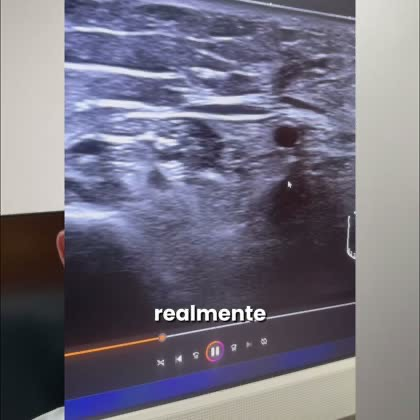
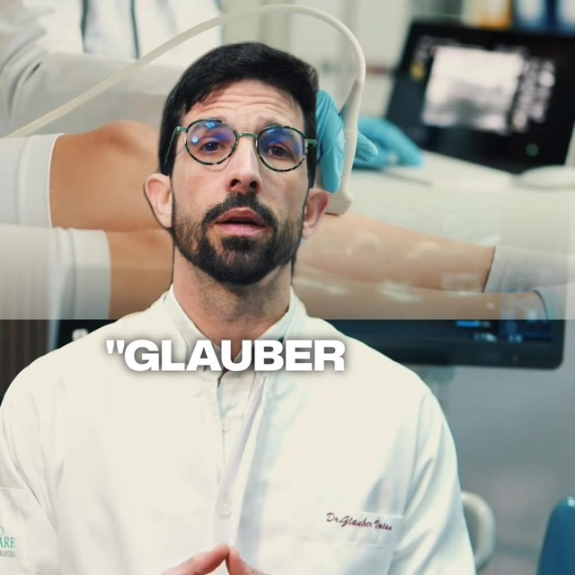
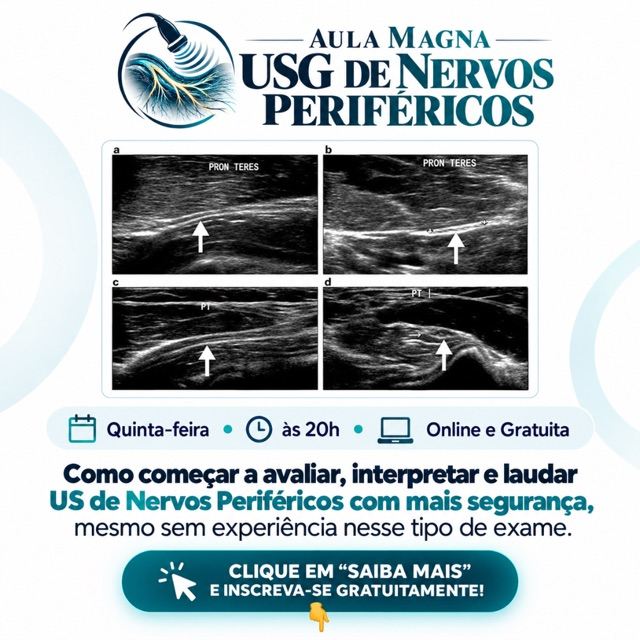
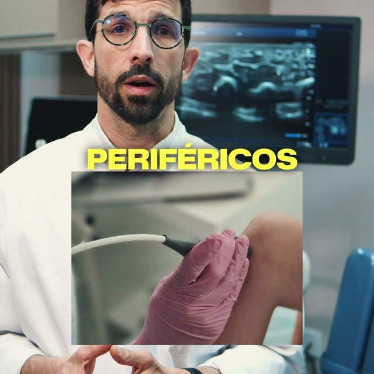

Nove dias de anúncio depois da correção do rastreio. A Live ficou mais barata por inscrição. A Aula Magna ficou mais cara porque a arte campeã cansou, mas já apareceram duas peças novas que captam bem.
Valores = investimento no Meta, sem imposto. Inscrição = cadastro contado pelo Meta (desde 28/10 bate 1 para 1 com a lista do ActiveCampaign). 05/11 conta só até o início da tarde.
Na leitura anterior (até 27/10): R$ 17,65 por inscrição.
Na leitura anterior (até 29/10): cerca de R$ 18 por inscrição.
| Criativo | Investido | Inscrições | R$ / inscrição | Leitura |
|---|---|---|---|---|
| V01_006 · dúvidas de exameperguntas do exame com a imagem de US na tela | R$ 162,46 | 19 | R$ 8,55 | melhor |
| V01_001 · caso clínicoGlauber no consultório, título "raciocínio clínico" | R$ 208,08 | 17 | R$ 12,24 | bom o que mais recebe verba |
| V01_007 · "é hoje"convite no dia da live | R$ 187,86 | 9 | R$ 20,87 | só p/ quem já conhece não capta em quem nunca viu o Glauber |
| V01_004 | R$ 58,67 | 3 | R$ 19,56 | fraco pouco volume |

Esse nervo está espessado ou eu estou medindo errado? É patológico ou variação?Subiu de R$ 18 para R$ 8,55 por inscrição. Fala a dúvida que o médico tem diante da imagem.
Toda terça a gente tem encontro marcado… casos, laudo, raciocínio clínico.Segue forte e é o que mais recebe verba.
É hoje, hein? … hoje às 20h30 a gente tem um encontro ao vivo.Só converte em quem já segue ou já viu o Glauber.
| Criativo | Investido | Inscrições | R$ / inscrição | Leitura |
|---|---|---|---|---|
| V01_005 · vídeo do Glauber de jalecono ar desde 02/11 | R$ 67,51 | 8 | R$ 8,44 | melhor melhor custo da frente em 3 dias |
| IMG01_008 · arte com imagens de US4 cortes de ultrassom com setas, faixa "quinta, 20h" | R$ 191,70 | 18 | R$ 10,65 | mais volume |
| IMG01_006 · arte com o rosto do Glaubera campeã da 1ª semana | R$ 462,63 | 16 | R$ 28,91 | cansou era R$ 3,72 até 23/10; ainda leva 44% da verba |
| V01_006 · vídeo sem tarja | R$ 121,80 | 3 | R$ 40,60 | empate a tarja não mudou nada; o vídeo em si é fraco |
| V01_006 · vídeo com tarja "Colega Ultrassonografista!" | R$ 101,19 | 3 | R$ 33,73 | |
| Outras010, 017, 014 (artes) e vídeos 001/002 com tarja | R$ 105,99 | 3 | R$ 35,33 | fraco pouco volume cada |



Hoje os anúncios vão para médicos de 25 a 65+. A faixa que mais se inscreve nas duas frentes é a de 65 anos ou mais: 1 de cada 3 inscrições. Antes de seguir investindo nela, precisamos saber se esse médico compra a Imersão e a Formação ou só assiste à aula gratuita.
| Idade | Live · inscrições | Live · R$ / inscr. | Aula Magna · inscrições | Aula Magna · R$ / inscr. |
|---|---|---|---|---|
| 25–34 | 1 | R$ 41,57 | 7 | R$ 19,72 |
| 35–44 | 4 | R$ 22,87 | 13 | R$ 15,65 |
| 45–54 | 10 | R$ 13,69 | 9 | R$ 25,80 |
| 55–64 | 15 | R$ 9,68 | 5 | R$ 36,38 |
| 65+ | 18 | R$ 11,22 | 17 | R$ 17,36 |
O que precisamos que o time responda:
Todas as peças em 1:1 e 9:16.
Glauber de jaleco falando para a câmera, exame acontecendo no fundo, legenda grande. Manter a mesma estrutura de fala do 005 (gancho, o que ele ensina, "mesmo sem experiência", "toda quinta, 20h, online e gratuita") e mudar só o gancho de abertura. É a peça com melhor custo da frente hoje.
Mesmo layout: imagens reais de ultrassom com setas, faixa "quinta, 20h, online e gratuita" e a promessa "mesmo sem experiência". Trocar os cortes (mediano, ulnar, fibular).
A arte cansou no mesmo público. Manter estrutura e frase, trocar a foto do Glauber (com transdutor na mão, de jaleco) e a cor de fundo.
Hoje é o melhor criativo da Live. 3 ou 4 perguntas curtas que o médico se faz diante da imagem, com o ultrassom na tela enquanto ele fala. Dúvidas novas, mesmo ritmo.
Nome do caso escrito na tela no início, consultório ou aparelho atrás, convite no fim: "toda terça, 20h30, no YouTube".